The original, as published: Tony R. Kuphaldt, Lessons In Industrial Instrumentation, Ziegler-Nichols tuning. CC BY 4.0, https://creativecommons.org/licenses/by/4.0/. Imported as published, from https://www.ibiblio.org/kuphaldt/socratic/sinst/book/liii.pdf https://www.ibiblio.org/kuphaldt/socratic/sinst/book/liii.pdf
A quantitative PID tuning procedure is a step-by-step approach leading directly to a set of numerical values to be used in a PID controller. These procedures may be split into two categories: open loop and closed loop. An “open loop” tuning procedure is implemented with the controller in manual mode: introducing a step-change to the controller output and then mathematically analyzing the results of the process variable response to calculate appropriate PID settings for the controller to use when placed into automatic mode. A “closed loop” tuning procedure is implemented with the controller in automatic mode: adjusting tuning parameters to achieve an easily-defined result, then using those PID parameter values and information from a graph of the process variable over time to calculate new PID parameters.
Quantitative PID tuning got its start with a paper published in the November 1942 Transactions of the American Society of Mechanical Engineers written by two engineers named Ziegler and Nichols. “Optimum Settings For Automatic Controllers” is a seminal paper, and deserves to be read by every serious student of process control theory. That Ziegler’s and Nichols’ recommendations for PID controller settings may still be found in modern references more than 60 years after publication is a testament to its impact in the field of industrial control. Although dated in its terminology and references to pneumatic controller technology (some controllers mentioned as not even having adjustable proportional response, and others as having only discrete degrees of reset adjustment rather than continuously variable settings!), the PID algorithm described by its authors and the effects of P, I, and D adjustments on process control behavior are as valid today as they were then. This section is devoted to a discussion of quantitative PID tuning procedures in general, and the “Ziegler-Nichols” methods in specific. It is the opinion of this author that the Ziegler-Nichols tuning methods are useful primarily as historical references, and indeed suffer from serious practical impediments. The most serious reservation I have with the Ziegler-Nichols methods (and in fact any algorithmic procedure for PID tuning) is that these methods tend to absolve the practitioner of responsibility for understanding the process they intend to tune. Any time you provide people with step-by-step instructions to perform complex tasks, there will be a great many readers of those instructions tempted to mindlessly follow the instructions, even to their doom. PID tuning is one of these “complex tasks,” and there is significant likelihood for a person to do more harm than good if all they do is implement a step-by-step approach rather than understand what they are doing, why they are doing it, and what it means if the results do not meet with satisfaction. Please bear this in mind as you study any PID tuning procedure, Ziegler-Nichols or otherwise.
Closed-loop refers to the operation of a control system with the controlling device in “automatic” mode, where the flow of the information from sensing element to transmitter to controller to control element to process and back to sensor represents a continuous (“closed”) feedback loop. If the total amount of signal amplification provided by the instruments is too much, the feedback loop will self-oscillate at the system’s natural (resonant) frequency. While oscillation is almost always considered undesirable in a control system, it may be used as an exploratory test of process dynamics if the controller acts purely on proportional action (no integral or derivative action): providing data useful for calculating effective PID controller settings. Thus, a “closed-loop” PID tuning procedure entails disabling any integral or derivative actions in the controller, then raising the gain value of the controller just far enough that self-sustaining oscillations ensue. The minimum amount of controller gain necessary to sustain sinusoidal oscillations is called the ultimate sensitivity (Su) or ultimate gain (Ku) of the process, while the time (period) between successive oscillation peaks is called the ultimate period (Pu) of the process. We may then use the measured values of Ku and Pu to calculate reasonable controller tuning parameter values (Kp, τi, and/or τd). When performing such a test on a process loop, it is important to ensure the oscillation peaks do not reach the limits of the instrumentation, either measurement or final control element. In other words, in order for the oscillation to accurately reveal the process characteristics of ultimate sensitivity and ultimate period, the oscillations must be naturally limited and not artificially limited by either the transmitter or the control valve saturating. Oscillations characterized by either the transmitter or the final control element reaching their range limits should be avoided in order to obtain the best closed-loop oscillatory test results. An illustration is shown here as a model of what to avoid:
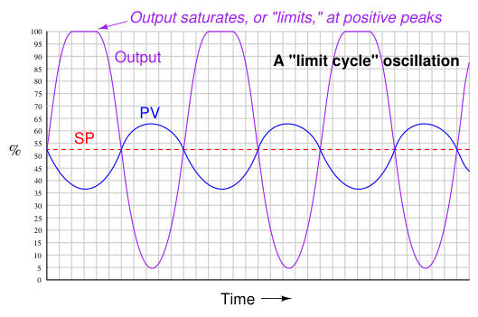
Here the controller gain is set too high, the result being saturation at the positive peaks of the output waveform. The controller gain should be decreased until symmetrical, sinusoidal waves result. If the controller in question is proportional-only (i.e. capable of providing no integral or derivative control actions), Ziegler and Nichols’ recommendation is to set the controller gain26 to one-half the value of the ultimate sensitivity determined in the closed-loop test, which I will call ultimate gain (Ku) from now on:
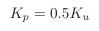
Where, Kp = Controller gain value that you should enter into the controller for good performance Ku = “Ultimate” gain determined by increasing controller gain until self-sustaining oscillations are achieved
Generally, a controller gain of one-half the experimentally determined “ultimate” gain results in reasonably quick response to setpoint and process load changes. Oscillations of the process variable following such setpoint and load changes typically damp with each successive wave peak being approximately one-quarter the amplitude of the one preceding. This is known as quarter-wave damping. While certainly not ideal, it is a compromise between fast response and stability. The following process trend shows what “quarter-wave damping” looks like with the controller in automatic mode, with the process variable (PV) exhibiting decaying oscillations following a stepchange in setpoint (SP):
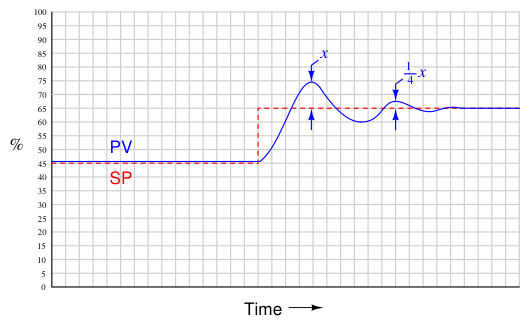
26Note that this is truly the gain of the controller, not the proportional band. If you were to enter a proportional band value one-half the proportional band value necessary to sustain oscillations, the controller would (obviously) oscillate completely out of control!
Ziegler and Nichols were careful to qualify quarter-wave damping as less than optimal for some applications. In their own words (page 761):
“The statement that a sensitivity setting of one half the ultimate with attendant 25 per cent amplitude ratio gives optimum control must be modified in some cases. For example, the actual level maintained by a liquid-level controller might not be nearly as important as the effect of sudden valve movements on further portions of the process. In this case the sensitivity should be lowered to reduce the amplitude ratio even though the offset is increased by so doing. On the other hand, a pressure-control application giving oscillations with very short period could be set to give an 80 or 90 per cent amplitude ratio. Due to the short period, a disturbance would die out in reasonable time, even though there were quite a few oscillations. The offset would be reduced somewhat though it should be kept in mind that it can never be reduced to less than one half of the amount given at our previously defined optimum sensitivity of one half the ultimate.”
Some would argue (myself included) that quarter-wave damping exercises the control valve needlessly, causing undue stem packing wear and consuming large quantities of compressed air over time. Given the fact that all modern process controllers have integral (reset) capability, unlike the simple pneumatic controllers of Ziegler and Nichols’ day, there is really no need to tolerate prolonged offset (failure of the process variable to exactly equalize with setpoint over time) as a necessary cost of avoiding valve oscillation. If the controller in question has integral (reset) action in addition to proportional, Ziegler and Nichols’ recommendation is to set the controller gain to slightly less than one-half the value of the ultimate sensitivity, and to set the integral time constant27 to a value slightly less than the ultimate period:
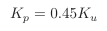
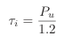
Where, Kp = Controller gain value that you should enter into the controller for good performance Ku = “Ultimate” gain determined by increasing controller gain until self-sustaining oscillations are achieved τi = Controller integral setting that you should enter into the controller for good performance (minutes per repeat) Pu = “Ultimate” period of self-sustaining oscillations determined when the controller gain was set to Ku (minutes)
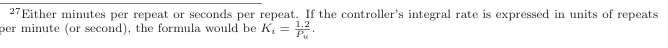
If the controller in question has all three control actions present (full PID), Ziegler and Nichols’ recommendation is to set the controller tuning constants as follows:
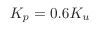
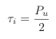
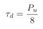
Where, Kp = Controller gain value that you should enter into the controller for good performance Ku = “Ultimate” gain determined by increasing controller gain until self-sustaining oscillations are achieved τi = Controller integral setting that you should enter into the controller for good performance (minutes per repeat) τd = Controller derivative setting that you should enter into the controller for good performance (minutes) Pu = “Ultimate” period of self-sustaining oscillations determined when the controller gain was set to Ku (minutes)
An important caveat with any tuning procedure based on ultimate gain is the potential to cause trouble in a process while experimentally determining the ultimate gain. Recall that “ultimate” gain is the amount of controller gain (proportional action) resulting in self-sustaining oscillations of constant amplitude. In order to precisely determine this gain setting, one must spend some time provoking the process with sudden setpoint changes (to induce oscillation) and experimenting with greater and greater gain settings until constant oscillation amplitude is achieved. Any more gain than the “ultimate” value, of course, leads to ever-growing oscillations which may be brought under control only by decreasing controller gain or switching to manual mode (thereby stopping all feedback in the system). The problem with this is, one never knows for certain when ultimate gain is achieved until this critical value has been exceeded, as evidenced by ever-growing oscillations. In other words, the system must be brought to the brink of total instability in order to determine its ultimate gain value. Not only is this time-consuming to achieve – especially in systems where the natural period of oscillation is long, as is the case with many temperature and composition control applications – but potentially hazardous to equipment and certainly detrimental to process quality28. In fact, one might argue that any process tolerant of such abuse probably doesn’t need to be well-tuned at all! Despite its practical limitations, the rules given by Ziegler and Nichols do shed light on the relationship between realistic P, I, and D tuning parameters and the operational characteristics of the process. Controller gain should be some fraction of the gain necessary for the process to self-oscillate. Integral time constant should be proportional to the process time constant; i.e. the
28Imagine informing the lead operations manager or a unit supervisor in a chemical processing facility you wish to over-tune the temperature controller in the main reaction furnace or the pressure controller in one of the larger distillation columns until it nearly oscillates out of control, and that doing so may necessitate hours of unstable operation before you find the perfect gain setting. Consider yourself fortunate if your declaration of intent does not result in security personnel escorting you out of the control room.
“slower” the process is to respond, the “slower” (less aggressive) the controller’s integral response should be. Derivative time constant should likewise be proportional to the process time constant, although this has the opposite meaning from the perspective of aggressiveness: a “slow” process deserves a long derivative time constant; i.e. more aggressive derivative action.
In contrast to the first tuning technique presented by Ziegler and Nichols in their landmark 1942 paper where the process was made to oscillate using proportional-only automatic control and the parameters of that oscillation served to define PID tuning parameters, their second tuning technique did not even rely on the presence of a controller. Instead, this second technique consisted of making a manual “step-change” of the control element (valve) and analyzing the resulting effect on the process variable, much the same way as described in the Process Characterization section of this chapter (section 30.1 beginning on page 2412). After making the step-change in output signal with the controller in manual mode, the process variable trend is closely analyzed for two salient features: the dead time and the reaction rate. Dead time (L)29 is the amount of time delay between the output step-change and the first indication of process variable change. Reaction rate is the maximum rate at which the process variable changes following the output step-change (the maximum time-derivative of the process variable):
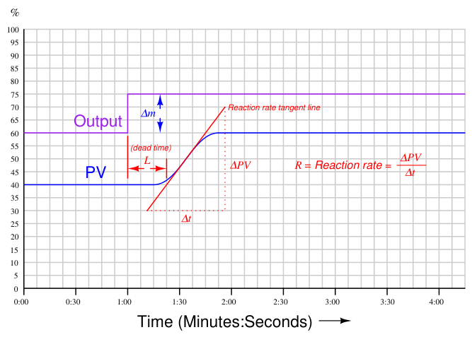
Dead time and reaction rate are responses common to self-regulating and integrating processes alike. Whether or not the process variable ends up stabilizing at some new value, its rate of rise will
29Unfortunately, Ziegler and Nichols chose to refer to dead time by the word lag in their paper. In modern technical parlance, “lag” refers to a first-order inverse-exponential function, which is fundamentally different from dead time. reach some maximum value following the output step-change, and this will be the reaction rate of the process30. The unit of measurement for reaction rate is percent per minute:
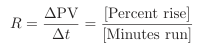
While dead time in a process tends to be constant regardless of the output step-change magnitude, reaction rate tends to vary directly with the magnitude of the output step-change. For example, an output step-change of 10% will generally cause the PV to rise at a rate twice as steep compared to the effects of a 5% output step-change. In order to ensure our predictive calculations capture only what is inherent to the process and not our own arbitrary open-loop tuning actions, we must include the output step-change magnitude (∆m) in those calculations as well31.
If the controller in question is proportional-only (i.e. capable of providing no integral or derivative control actions), Ziegler and Nichols’ recommendation is to set the controller gain as follows:
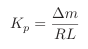
Where, Kp = Controller gain value that you should enter into the controller for good performance ∆m = Output step-change magnitude made while testing in open-loop (manual) mode (percent) R = Process reaction rate = ∆PV
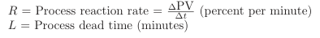
If the controller in question has integral (reset) action in addition to proportional, Ziegler and Nichols’ recommendation is to set the controller gain to 90% of the proportional-only value, and to set the integral time constant to a value just over three times the measured dead time value:
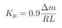
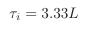
Where, Kp = Controller gain value that you should enter into the controller for good performance ∆m = Output step-change magnitude made while testing in open-loop (manual) mode (percent) R = Process reaction rate = ∆PV
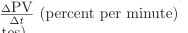
L = Process dead time (minutes) τi = Controller integral setting that you should enter into the controller for good performance (minutes per repeat)
30Right away, we see a weakness in the Ziegler-Nichols open-loop method: it makes absolutely no distinction between self-regulating and integrating process types. We know this is problematic from the analysis of each process type in sections 30.1.1 and 30.1.2. 31Ziegler and Nichols’ approach was to define a normalized reaction rate called the unit reaction rate, equal in
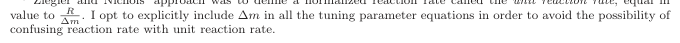
If the controller has full PID capability, Ziegler and Nichols’ recommendation is to set the controller gain to 120% of the proportional-only value, to set the integral time constant to twice the measured dead time value, and to set the derivative time constant to one-half the measured dead time value:
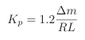
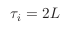
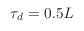
Where, Kp = Controller gain value that you should enter into the controller for good performance ∆m = Output step-change magnitude made while testing in open-loop (manual) mode (percent) R = Process reaction rate = ∆PV
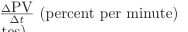
L = Process dead time (minutes) τi = Controller integral setting that you should enter into the controller for good performance (minutes per repeat) τd = Controller derivative setting that you should enter into the controller for good performance (minutes)
As you can see, the Ziegler-Nichols open-loop tuning method relies heavily on dead time (L) as a descriptive parameter for the process. This may be problematic in processes having insubstantial dead time, as the small L values obtained during the open-loop test will predict large controller gain (Kp) and aggressive integral (τi) time constant values, often too large to be practical. The open-loop method, however, is less disruptive to an operating process than the closed-loop method (which necessitated over-tuning the controller to the brink of total instability). Another limitation, common to both the closed-loop and open-loop tuning methods, is that other factors in the process such as noise and hysteresis are completely overlooked. Noise is troublesome for large controller gain values (because the controller’s proportional action reproduces that noise on the output) and is especially troublesome for derivative action which amplifies any noise it sees. Hysteresis causes integral action to continually “hunt” up and down, leading to cycling of the process variable. The lesson here is that no algorithmic PID tuning method can replace informed judgment on the part of the person tuning the loop. The methods proposed by Ziegler and Nichols (and others!) are merely starting points, and should never be taken as a definitive answer for controller tuning.